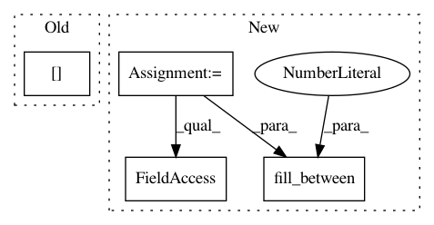

e8b2e17f4eec658f6a6d53486dbbe3eac48bb0fa,pyinterpret/core/global_interpretation/partial_dependence.py,PartialDependence,_plot_2d_2_binary_feature,#PartialDependence#Any#Any#Any#Any#Any#Any#,619
Before Change
for val in np.unique(pdp[feature2]):
color = next(colors)
filter_idx = pdp[feature2] == val
pdp_vals = pdp[filter_idx][mean_col].values
x1 = pdp[filter_idx][feature1].values
ax.bar(x1, pdp_vals, color=color,
label="{} = {}".format(*[feature2, val], align="center")
After Change
class_col_pairs, with_variance=False):
figure_list, axis_list = [], []
sd_col = pdp_metadata["sd_col"]
std_error = pdp.set_index([feature1, feature2])[sd_col].unstack()
for class_name, mean_col in class_col_pairs:
f = plt.figure()
ax = f.add_subplot(111)
//feature2 is columns
//feature1 is index
plot_data = pdp.set_index([feature1, feature2])[mean_col].unstack()
plot_data.plot(ax=ax, color=COLORS)
if with_variance:
colors = cycle(COLORS)
binary1_values = plot_data.index.values
binary2_values = plot_data.columns.values
for binary2_value in binary2_values:
color = next(colors)
yerr = std_error[binary2_value].values
upper_plane = yerr + plot_data[binary2_value].values
lower_plane = plot_data[binary2_value].values - yerr
ax.fill_between(binary1_values, lower_plane, upper_plane,
color=color,alpha=.2)
figure_list.append(f)
axis_list.append(ax)
ax.set_xlabel(feature1)
ax.set_ylabel("Predicted {}".format(class_name))
In pattern: SUPERPATTERN
Frequency: 3
Non-data size: 4
Instances
Project Name: datascienceinc/Skater
Commit Name: e8b2e17f4eec658f6a6d53486dbbe3eac48bb0fa
Time: 2017-03-30
Author: aikramer2@gmail.com
File Name: pyinterpret/core/global_interpretation/partial_dependence.py
Class Name: PartialDependence
Method Name: _plot_2d_2_binary_feature
Project Name: tgsmith61591/pmdarima
Commit Name: 92d352eb861df852fbfc25bae2ca3215fbfcf45d
Time: 2019-10-28
Author: tgsmith61591@gmail.com
File Name: examples/example_pipeline.py
Class Name:
Method Name:
Project Name: freelunchtheorem/Conditional_Density_Estimation
Commit Name: b71a65e0a314ecd6e17d18a70db4b4177a43d5ed
Time: 2018-03-30
Author: jonas.rothfuss@gmx.de
File Name: cde/evaluation/GoodnessOfFitResults.py
Class Name: GoodnessOfFitResults
Method Name: plot_metric